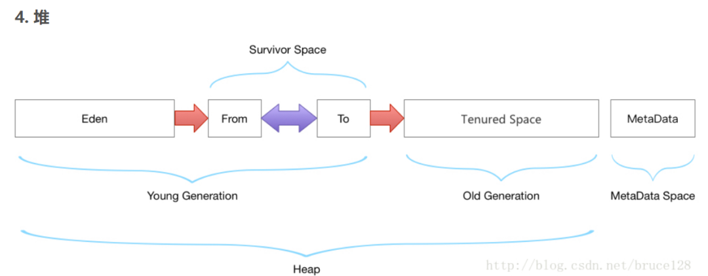

先了解原理，然后在进行调优。
一定要记住的是任何的调优都不是一蹴而就，不要指望改动一个参数就达到调优的目的，也不要仅仅改动了一个参数，就认为是做了调优。调优是在已有的资源和要达到的目标的前提上，进行权衡。
从类加载到整个JVM的运行周期内大致流程和结构如下：
从上图可以看到，JVM 可以划分为这些部分：
执行引擎，包括：GC、JIT 编译器
类加载子系统，这部分的问题，一般在开发过程中出现
JNI 部分，这部分问题一般在 JVM 之外
运行时数据区；Java 将内存分为 2 大块：堆内存和栈内存
首先我们要对上述的内容有一定的了解，从全局出发。看了上图，在调优中我们能做的也就是对运行时数据区进行一些操作，然后选择执行引擎用何种垃圾收集器对垃圾进行回收。
1、本文调优思路只针对JVM1.8，先看下JVM1.8内存模型

注意：JVM 线程占用的是系统空间，所以当JVM的堆内存越大，系统本身的内存就越少，自然可生成的线程数量就越少。
2、JVM调优，主要从两个方面考虑：堆内存大小配置和垃圾回收算法选择
2
3
4
5
6
7
8
9
10
11
12
13
14
15
16
17
-Xmx4g -Xms4g
# 指定 GC 算法
-XX:+UseG1GC -XX:MaxGCPauseMillis=50
# 指定 GC 并行线程数
-XX:ParallelGCThreads=4
# 打印 GC 日志
-XX:+PrintGCDetails -XX:+PrintGCDateStamps
# 指定 GC 日志文件
-Xloggc:gc.log
# 指定 Meta 区的最大值
-XX:MaxMetaspaceSize=2g
# 设置单个线程栈的大小
-Xss1m
# 指定堆内存溢出时自动进行 Dump
-XX:+HeapDumpOnOutOfMemoryError
-XX:HeapDumpPath=/usr/local3、JVM - GC类型组合以及适用场合
垃圾回收，分为Young区垃圾回收器，以及Old区垃圾回收器两部分，两部分需要组合使用：
新生代收集器：Serial、ParNew、Parallel Scavenge；
老年代收集器：Serial Old、Parallel Old、CMS；
serial：新生代收集器，是最早出现最成熟的收集器，单线程，独占式，GC时会stop the world 应用暂停。
ParNew ：新生代收集器，是Serial 收集器的多线程版本，独占式，同样地GC时会stop the world 应用暂停。
Parallel Scavenge：新生代收集器， 独占式， 与ParNew相似，特点：吞吐量优先
CMS：（concurrent-mark-sweep），老年代收集器，非独占式，多个线程，标记并清除算法，响应时间优先，缺点是GC后不进行内存整理，会有内存碎片。
Serial Old：是Serial 的老年代版本，同样是单线程收集器， 独占式
Parallel Old 是Parallel Scavenge 收集器的老年代版本，多线程收集， 独占式
G1：备受期待的新一代垃圾收集器，可预测的停顿：这又是G1相对于CMS的一大优势，结合了Parallel Scavenge以及CMS两种收集器的优点，又摒弃了其缺陷， 非独占式
收集器的好坏，主要有两个指标：停顿时间和吞吐量
GC 选择的经验总结
综合来看，G1 是 JDK11 之前 HotSpot JVM 中最先进的准产品级（production-ready） 垃圾收集器。重要的是，HotSpot 工程师的主要精力都放在不断改进 G1 上面。在更新的 JDK 版本中，将会带来更多强大的功能和优化。
可以看到，G1 作为 CMS 的代替者出现，解决了 CMS 中的各种疑难问题，包括暂停时间的可预测性，并终结了堆内存的碎片化。对单业务延迟非常敏感的系统来说，如果 CPU 资源不受限制，那么 G1 可以说是 HotSpot 中最好的选择，特别是在最新版本的 JVM 中。当然这种降低延迟的优化也不是没有代价的：由于额外的写屏障和守护线程，G1 的开销会更大。如果系统属于吞吐量优先型的，又或者 CPU 持续占用 100%，而又不在乎单次 GC 的暂停时间，那么 CMS 是更好的选择。
总之，G1 适合大内存，需要较低延迟的场景。
选择正确的 GC 算法，唯一可行的方式就是去尝试，并找出不合理的地方，一般性的指导原则：
如果系统考虑吞吐优先，CPU 资源都用来最大程度处理业务，用 Parallel GC；
如果系统考虑低延迟有限，每次 GC 时间尽量短，用 CMS GC；
如果系统内存堆较大，同时希望整体来看平均 GC 时间可控，使用 G1 GC。
最后讨论一个很多开发者经常忽视的问题，也是面试大厂常问的问题：
JDK 8 的默认 GC 是什么？
很多人或觉得是 CMS，甚至 G1，其实都不是。
答案是：JDK 8并行 GC 是 JDK8 里的默认 GC 策略。默认使用的是 Parallel Scavenge (新生代) 和 Parallel Old (老年代),基于我的Jdk 1.8.0_181-b13版本
注意，G1 成为 JDK9 以后版本的默认 GC 策略，同时，ParNew + SerialOld 这种组合不被支持。
最后在分享一下，调优后如果还遇到JVM相关问题，请记住十六字箴言：做好监控，定位问题，验证结果，总结归纳。
谢谢观看~